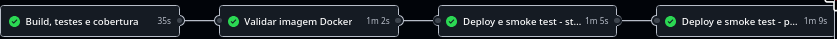

Engenharia de Software & Práticas DevOps
Pipeline de CI/CD automatizado, Containerização Multi-Stage e Orquestração Multi-Ambiente (Staging & Produção).
Automação de ciclo de vida completo com validações em cada estágio.
Boas práticas para alta performance, baixo consumo e máxima segurança.
/actuator/health.
JAVA_OPTS="-XX:+UseContainerSupport -XX:MaxRAMPercentage=75.0 -XX:+ExitOnOutOfMemoryError"Todos os requisitos da Fase 6 cumpridos com excelência.
